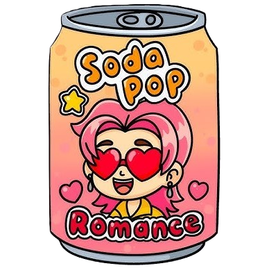
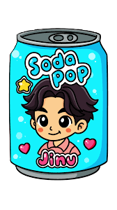
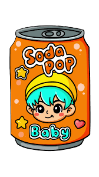
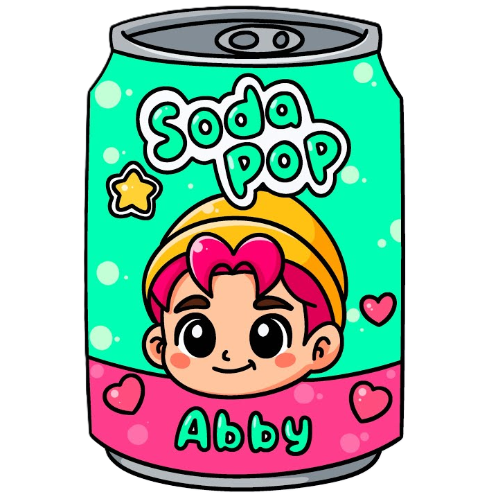
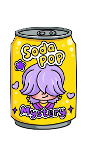
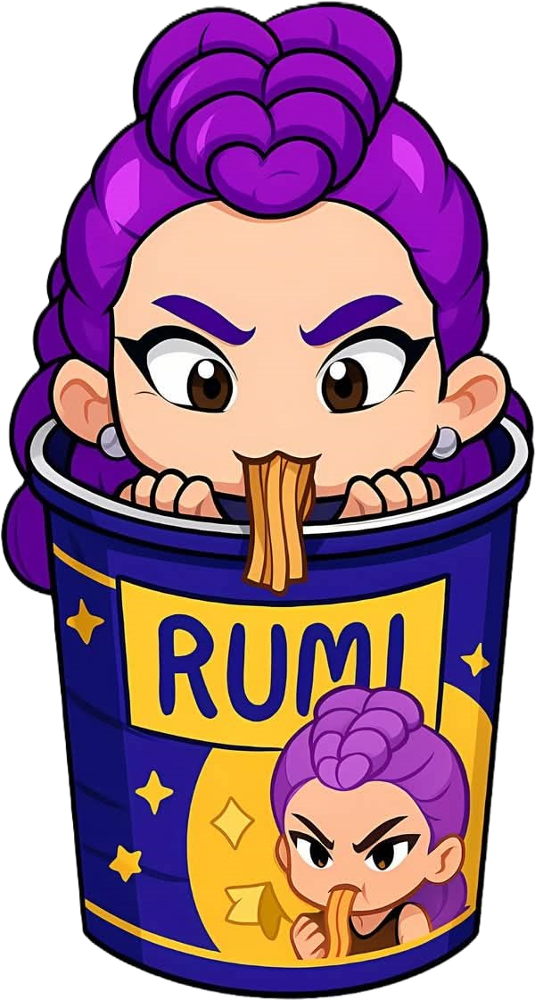
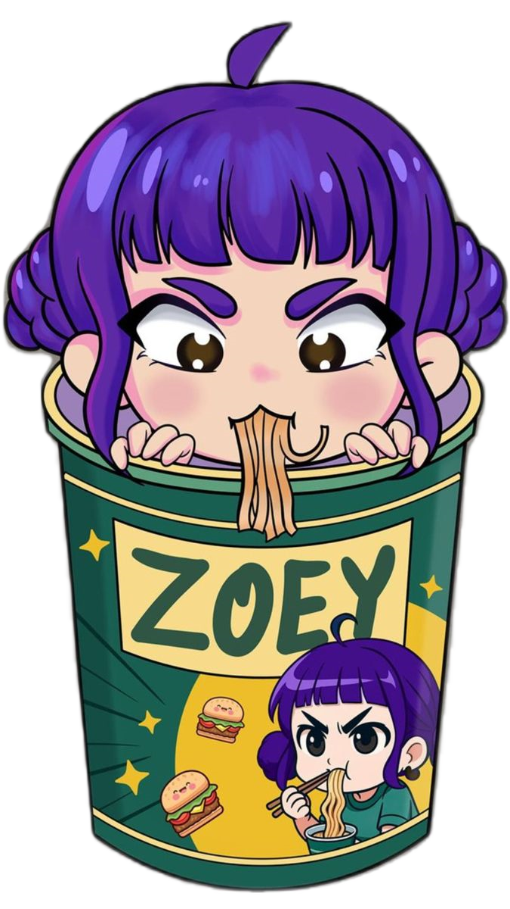
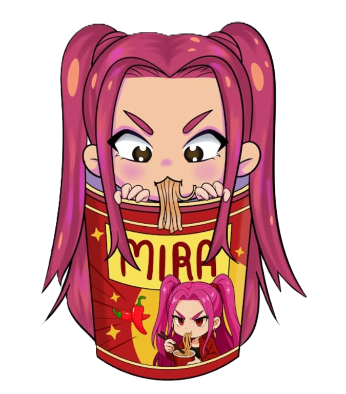
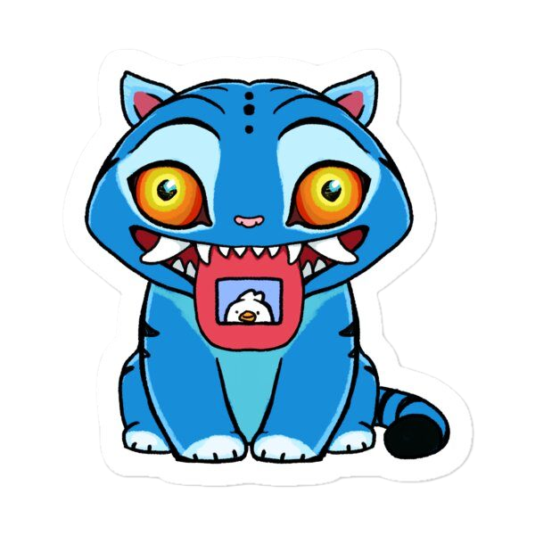

| Nombre | Ubicación |
|---|---|
| You are | My |
| Soda | Pop |

La exitosa película "KPop Demon Hunters" se convirtió en una sensación cultural cuando se estrenó en Netflix a principios de este verano, impulsando colaboraciones con marcas y productos patrocinados por doquier, incluyendo fideos instantáneos de marca inspirados en Una escena en la película, donde los personajes principales se cargan para luchar contra demonios tomando ramen instantáneo.

Los 1.000 sets de fideos instantáneos Nongshim Shin Ramyun de edición limitada con Zoey, Rumi y Mira se agotaron al instante cuando se abrieron las ventas en la tienda online de la empresa.

El fabricante de ramyeon abrirá otra edición limitada, lanzando 1.000 colecciones más en una fecha posterior. Los sabores más comunes de ramyeon Nongshim con envase "KPop Demon Hunters" están ampliamente disponibles en tiendas de Corea, así como en países de Norteamérica, Europa, Oceanía y el sudeste asiático.

Descrito como sabor súper estrella o pollo, una opción divertida y clásica.

Picante y atrevido, a menudo descrito con toques de habanero, limón y camarón.

Sabor a hamburguesa de carne, descrito como una opción inesperada y con trozos de carne.

